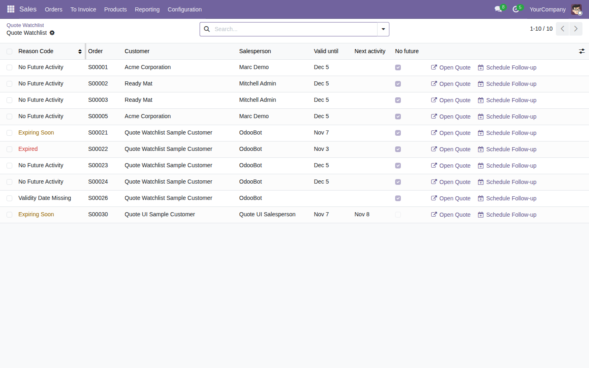

Review quotations that are expiring, expired, or missing a future activity without changing the quote or contacting the customer.
Free, open-source Odoo 19 addon (LGPL-3). Requires the standard sale_management module.
Open Sales → Orders → Quote Watchlist and scan current draft or sent quotations.

Tested on Odoo 19 Community. Scans are temporary snapshots capped at 2,000 quotations and 500 results; refresh after a quote or activity changes. Enterprise compatibility remains unverified.